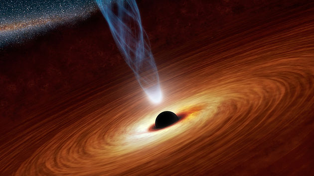
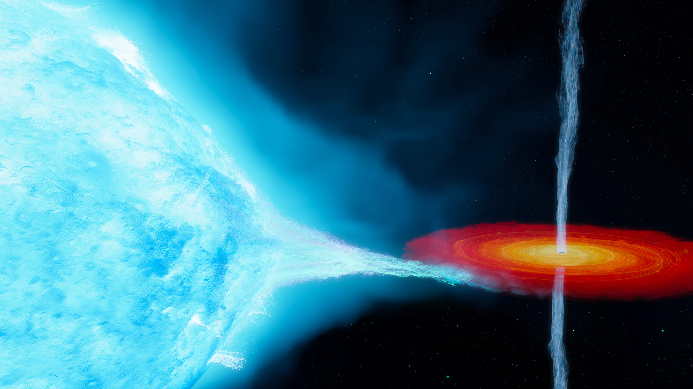

28 Σεπτεμβρίου 2023
Μπορεί άραγε να υπάρχουν αντικείμενα στο Σύμπαν που οτιδήποτε υπάρχει στην γειτονιά τους να είναι καταδικασμένο να καταρρεύσει στο εσωτερικό τους αφού πρώτα διαμελιστεί; Υπάρχουν άραγε κοσμικές σήραγγες που να επιτρέπουν τα ταξίδια στον χρόνο ή σε μακρινά αστρικά συστήματα και άλλους γαλαξίες; Για πολλά από αυτά τα ερωτήματα θα γίνει αναφορά σε αυτό το μικρό άρθρο σε εκλαϊκευμένη, απλή γλώσσα που απευθύνεται σε όλους μας. Επίσης θα γνωριστείτε με πολλά από τα συμπεράσματα της θεωρίας της σχετικότητας όπως το ότι δύο ρολόγια, ένα στο πάτωμα και ένα στην οροφή του δωματίου σας δεν μετράνε τον χρόνο με τον ίδιο ρυθμό ή το ότι το φως που περνάει κοντά από έναν αστέρα εκτρέπεται λόγω βαρύτητας.
Τα λίκνα των αστεριών είναι τα νεφελώματα, όπου τα άστρα γεννιούνται με την βοήθεια της βαρύτητας. Όταν λέμε ότι ένα αστέρι γεννιέται εννοούμε ότι έχει συγκεντρώσει σημαντική ποσότητα μάζας από το νεφέλωμα ώστε στον πυρήνα του να έχει δημιουργηθεί η απαραίτητη πίεση και θερμοκρασία για να αρχίσει η θερμοπυρηνική αντίδραση της μετατροπής του υδρογόνου σε ήλιο με ταυτόχρονη παραγωγή θερμότητας και ακτινοβολίας. Με αυτόν τον τρόπο γεννήθηκε και φωτοβολεί και ο Ήλιος μας.
Φυσικά μετά από μερικά δισεκατομμύρια χρόνια, ανάλογα με το αρχικό μέγεθος του αστεριού, τα πυρηνικά καύσιμα στο κέντρο του άστρου θα εξαντληθούν και έτσι θα φτάσουμε στο τελικό στάδιο της εξέλιξής του. Ο ήλιος μας γεννήθηκε πριν από πέντε δισεκατομμύρια χρόνια και αναμένεται να ζήσει ακόμα πέντε.
Τι θα γίνει τώρα στο τελικό αυτό στάδιο εξαρτάται από το μέγεθος του άστρου. Αν το αρχικό μέγεθος του άστρου είναι μικρότερο από 1,4 ηλιακές μάζες, τότε μετατρέπεται σε άσπρο νάνο, ενώ αν είναι μεταξύ 1,4 και 2,5, τότε θα δημιουργηθεί ένα άστρο νετρονίων. Τέλος αστέρια μεγαλύτερα από 2,5 ηλιακές μάζες θα καταλήξουν να μετατραπούν σε ένα εξωτικό αντικείμενο που ονομάζεται μαύρη τρύπα ή μελανή οπή.

Εικόνα 1: Καλλιτεχνική απεικόνιση μελανής οπής. Η κεντρική μαύρη περιοχή είναι η μελανή οπή. Γύρω της βλέπουμε τον δίσκο προσαύξησης που στροβιλίζεται καθώς και τον ένα πίδακα.
Δύο πράγματα συμβαίνουν σε ένα άστρο που ακόμα καίει η φωτιά της θερμοπυρηνικής αντίδρασης στον πυρήνα του. Πρώτον, η πίεση της πυρηνικής αντίδρασης θέλει να εκτινάξει όλα τα υλικά από τον πυρήνα και πάνω προς τα έξω και να τα εκτοξεύσει στο διάστημα και δεύτερον, τα υλικά αυτά έχουν ένα πολύ σημαντικό βάρος λόγω του μεγέθους του άστρου που υπερνικούν αυτήν την προς τα έξω πίεση. Το τελικό αποτέλεσμα είναι να έχει δημιουργηθεί μία ισορροπία και το άστρο να λάμπει και να είναι σταθερό, όπως ο κοντινός μας Ήλιος.
Κάποτε όμως, το καύσιμο στον πυρήνα θα τελειώσει και έτσι θα σταματήσει και η πυρηνική αντίδραση με αποτέλεσμα να μην υπάρχει αυτή η εσωτερική πίεση προς τα έξω και να κερδίζει μόνο η προς τα μέσα δύναμη της βαρύτητας. Το αποτέλεσμα είναι το άστρο να καταρρεύσει προς το εσωτερικό του και όλη η μάζα του να συγκεντρωθεί σε ένα πολύ μικρό χώρο στο κέντρο του άστρου.
Με αυτόν τον τρόπο αν, όπως είπαμε, η αρχική μάζα του αστεριού είναι μεγαλύτερη από 2,5 ηλιακές μάζες, θα γεννηθεί μία μελανή οπή.
Το κύριο χαρακτηριστικό των μελανών οπών είναι ότι λόγω της μεγάλης μάζας τους που είναι συγκεντρωμένη σε ένα πολύ μικρό σημείο έχουν πολύ μεγάλη βαρύτητα, με αποτέλεσμα να έλκουν και να καταβροχθίζουν οποιοδήποτε υλικό από μεσοαστρική σκόνη ως και γιγαντιαίων διαστάσεων αστέρια που θα βρεθούν στην γειτονιά τους.
Μάλιστα υπάρχει και μία νοητή σφαιρική επιφάνεια γύρω της, που σηματοδοτεί ένα όριο από το οποίο οτιδήποτε περάσει μέσα από αυτό δεν μπορεί με οποιοδήποτε τρόπο να ξαναγυρίσει προς τα πίσω. Το όριο αυτό ονομάζεται «ορίζοντας γεγονότων». Ό,τι βρεθεί λοιπόν μέσα από τον ορίζοντα γεγονότων είναι καταδικασμένο να εγκλωβιστεί μέσα στην περιοχή της μελανής οπής. Μάλιστα όταν λέμε οτιδήποτε εννοούμε, εκτός από την ύλη, ακόμα και το φως.
Αρχικά οι επιστήμονες πίστευαν ότι αν πλησιάζαμε αρκετά κοντά στην μελανή οπή, θα βλέπαμε κάποια σωματίδια φωτός τα οποία θα εκπέμπονταν από την μαύρη τρύπα αλλά δεν θα είχαν αρκετά μεγάλη ταχύτητα διαφυγής και μετά από λίγο θα επέστρεφαν πάλι μέσα. Με τον ίδιο τρόπο αν εκτοξεύσουμε μία πέτρα προς τον ουρανό, αυτή επιστρέφει πάλι πίσω. Όμως κοντά σε μία μελανή οπή όπου όλη αυτή η μεγάλη μάζα έχει συγκεντρωθεί σε ένα πολύ μικρό σημείο, λαμβάνει χώρα ο εξής ενδιαφέρον μηχανισμός.
Εάν τοποθετήσουμε ένα ρολόι κοντά σε μία μεγάλη βαρυτική μάζα, θα παρατηρήσουμε να πηγαίνει πιο αργά, π.χ. ένα ρολόι κοντά στην επιφάνεια του Ήλιου μας χάνει 64 δευτερόλεπτα κάθε χρόνο σε σχέση με ένα ρολόι που είναι πάνω στην Γη. Έτσι λοιπόν τα κύματα του φωτός που εκπέμπονται από την επιφάνεια του Ήλιου μας έχουν, λόγω της επιβράδυνσης του χρόνου, μικρότερη συχνότητα και μεγαλύτερο μήκος κύματος από αυτά που θα εκπέμπονταν με τις ίδιες συνθήκες σε κάποιο άλλο σημείο του χώρου που δεν θα είχε κοντά του μία τόσο μεγάλη μάζα. Υπάρχει δηλαδή μία βαρυτική μετατόπιση προς το ερυθρό. Μάλιστα όταν πλησιάζουμε ένα ρολόι κοντά σε μία μελανή οπή η επιβράδυνση του χρόνου είναι ακόμα πιο έντονη και μάλιστα την στιγμή που περνάμε από τον ορίζοντα της μελανής οπής ο χρόνος σταματάει να κυλάει. Αυτό έχει σαν αποτέλεσμα το μήκος κύματος του φωτός που εκπέμπεται από την μελανή οπή να έχει άπειρο μήκος κύματος, δηλαδή στην πραγματικότητα να μην υφίσταται αυτό το κύμα. Επομένως από τον ορίζοντα της μαύρης τρύπας δεν εκπέμπεται καθόλου φως.
Ένα αντικείμενο που βρίσκεται λίγο πιο έξω από τον ορίζοντα με αρκετά μεγάλη προσπάθεια μπορεί να κινηθεί κάθετα προς αυτόν και τελικά να ξεφύγει από την βαρυτική έλξη της τρύπας. Ένα επίσης ενδιαφέρον χαρακτηριστικό σχετικά με αυτό το θέμα είναι ότι κανένα αντικείμενο δεν μπορεί να διαγράψει κυκλική κίνηση εάν βρίσκεται πολύ κοντά στον ορίζοντα αλλά πάνω από αυτόν, ενώ αν το προσπαθήσει είναι καταδικασμένο να πέσει μέσα στην μελανή οπή. Όπως γνωρίζετε, στην κυκλική κίνηση η ταχύτητα προκαλεί μία αδρανιακή δύναμη· την φυγόκεντρο δύναμη που αντιτίθεται στην βαρυτική έλξη και έτσι το αντικείμενο μπορεί να περιστραφεί γύρω από το βαρυτικό κέντρο. Όμως πολύ κοντά σε μία μελανή οπή η ταχύτητα που πρέπει να αναπτύξουμε για να έχουμε μία ευσταθή κυκλική κίνηση είναι μεγαλύτερη της ταχύτητας του φωτός, το οποίο φυσικά δεν υφίσταται και το αντικείμενο είναι καταδικασμένο να καταρρεύσει κάτω από τον ορίζοντα.
Έτσι λοιπόν τα σωματίδια του φωτός που θα βρεθούν κοντά στην μελανή οπή και θα καταλήξουν στο εσωτερικό της δεν μπορούν ποτέ ξανά να εξέλθουν όση ενέργεια και να ξοδέψουν. Έτσι λοιπόν από την μελανή οπή δεν εκπέμπεται φως με αποτέλεσμα να φαίνεται αυτή στον ουρανό ως ένα μαύρο αντικείμενο. Από αυτήν την σπάνια ιδιότητα προέρχεται η ονομασία των μελανών οπών.

Εικόνα 2: Στην εικόνα βλέπουμε την καλλιτεχνική απεικόνιση μίας μελανής οπή η οποία περιβάλλεται από τον δίσκο προσαύξησης και τους δύο πίδακες. Γύρω της περιστρέφεται ένας μπλε υπεργίγαντας.
Η πρώτη μελανή οπή που παρατηρήσαμε, το 1964, με τα τηλεσκόπια μας είναι αυτή που βρίσκεται στον αστερισμό του Κύκνου. Για όσους παρατηρούν τον ουρανό με τηλεσκόπιο είναι κοντά στο η του Κύκνου πλησίον του αστεριού Ντενέμπ. Δυστυχώς δεν μπορεί να παρατηρηθεί με οικιακά τηλεσκόπια.
Ονομάζεται Κύκνος Χ-1/HDE226868 και είναι ένα διπλό σύστημα δύο ουράνιων σωμάτων που αποτελείται από έναν μπλε υπεργίγαντα, δηλαδή ένα άστρο με μέγεθος 20-40 φορές την ηλιακή μάζα και από ένα συμπαγές αντικείμενο (compact object) που είναι η μελανή οπή με μέγεθος 21,2 ηλιακές μάζες. Τα δύο αντικείμενα κάνουν μία περιστροφή γύρω από το κέντρο του διπλού συστήματος κάθε 5,6 ημέρες. Το διπλό αυτό σύστημα ανήκει σε ένα πολύ χαλαρό αστρικό σμήνος και μάλιστα απέχει από την Γη απόσταση περίπου 2220 Παρσέκ ή 460.000.000 Αστρονομικές Μονάδες. Η μία Αστρονομική Μονάδα ισούται με την μέση απόσταση της Γης από τον Ήλιο.
Η περίμετρος του ορίζοντα γεγονότος μίας μελανής οπής σχετίζεται με την μάζα της. Όσο πιο μεγάλη μάζα έχει τόσο μεγαλύτερη είναι και η περίμετρος του ορίζοντα. Ο Κύκνος Χ-1 έχει έναν ορίζοντα με περίμετρο 300Km. Δηλαδή οι 21,2 ηλιακές μάζες έχουν εγκλωβιστεί μέσα σε μία σφαιρική περιοχή περιμέτρου 300Km. Για να φανταστείτε πόσο μικρό είναι αυτό το μέγεθος πρέπει να σκεφτείτε ότι για μα μετατρέψουμε την Γη σε μία μελανή οπή πρέπει να την συμπιέσουμε στο μέγεθος ενός καρυδιού.
Τώρα, προφανώς το πρώτο που μας έρχεται στο μυαλό είναι ότι αυτή η μάζα στο εσωτερικό της μελανής οπής έχει ισοκατανεμηθεί σε όλη την σφαίρα μέσα από τον ορίζοντα και μάλιστα πρέπει να έχει μία πολύ μεγάλη πυκνότητα. Παρόλα αυτά η γενική θεωρία της σχετικότητας διατείνεται ότι όλη η μάζα της έχει συγκεντρωθεί σε ένα υλικό σημείο, της τάξης μεγέθους του εκατοστά που ονομάζεται «σημειακή ανωμαλία». Επομένως όλη η μάζα της μελανής οπής είναι συγκεντρωμένη στο κέντρο σε αυτή την σημειακή ανωμαλία και μάλλον ο χώρος από το κέντρο μέχρι τον ορίζοντα είναι κενός.
Ένα δεύτερο ενδιαφέρον σημείο είναι ο υπολογισμός της ακτίνας αυτού του σφαιρικού αντικειμένου που ονομάζουμε μελανή οπή. Στην Ευκλείδεια γεωμετρία μπορούμε πολύ εύκολα να υπολογίσουμε την ακτίνα μίας σφαίρας όταν γνωρίζουμε την περίμετρό της. Ο χώρος όμως μέσα από την μελανή οπή σίγουρα δεν είναι επίπεδος αλλά καμπύλος αλλά και πάλι κάποιος θα έλεγε ότι θα μπορούσαμε να υπολογίσουμε την ακτίνα με τους τύπους των καμπύλων γεωμετριών (Ελλειπτική γεωμετρία του Ρίμαν, ίσως και η Υπερβολική γεωμετρία του Λομπατσέφσκι). Το πρόβλημα είναι ότι μάλλον υπάρχει περίπτωση ο χώρος να έχει καμπυλωθεί σε τέτοιο βαθμό που μάλλον είναι αδύνατο να υπολογίσουμε με ακρίβεια κάποια ακτίνα. Επομένως θα μπορούσαμε να πούμε ότι αυτό το σφαιρικό αντικείμενο που ονομάζουμε μελανή οπή μπορεί να έχει ίσως και άπειρη ακτίνα. Ίσως για να το καταλάβετε καλύτερα με ένα αντίστοιχο παράδοξο παράδειγμα: είναι σαν να έχουμε ένα μικρό σχετικά κύκλο με άπειρη ακτίνα.
Παρόλα αυτά η μέτρηση της μάζας μιας μελανής οπής είναι μία σχετικά εύκολη υπόθεση. Η μέθοδος έχει πρωτοχρησιμοποιηθεί από τον Ισαάκ Νεύτωνα το 1687 για την μέτρηση της μάζας του Ηλίου. Αυτή η μέθοδος με απλά λόγια συνίσταται στο να υπάρχει ένα αντικείμενο που περιστρέφεται γύρω από την τρύπα. Σε αυτή την κυκλική κίνηση η φυγόκεντρος δύναμη είναι αντίθετη της βαρυτικής δύναμης της τρύπας. Γνωρίζοντας με κάποιο τρόπο τον χρόνο που χρειάζεται αυτό το αντικείμενο να περιστραφεί γύρω από την τρύπα καθώς και την ακτίνα της τροχιάς του, μπορούμε να υπολογίσουμε την μάζα της μελανής οπής. Φυσικά αν το αντικείμενο περιστρέφεται πολύ κοντά στην μελανή οπή, τότε θα πρέπει να βελτιώσουμε τις εξισώσεις της θεωρίας του Νεύτωνα με την νέα θεωρία της σχετικότητας του Άλμπερτ Αϊνστάιν που διατυπώθηκε το 1915. Αυτό πρέπει να γίνει γιατί ο χώρος σε κοντινές αποστάσεις στην μελανή οπή έχει καμπυλωθεί σημαντικά και η παλιά θεωρία του Νεύτωνα δεν έχει λάβει υπόψιν της αυτήν την καμπύλωση του χώρου.
Όπως αναφέραμε, οι μελανές οπές προέρχονται από άστρα. Αυτά πριν μετατραπούν σε μαύρες τρύπες μπορεί να περιστρέφονταν. Είχαν δηλαδή κάποια στροφορμή. Λόγω της αρχής διατήρησης της στροφορμής, την ίδια στροφορμή πρέπει να έχει και η μελανή οπή. Επομένως αν μία τρύπα περιστρέφεται, λόγω της μεγάλης μάζας της θα στροβιλίζει και τον χώρο που βρίσκεται γύρω της με αποτέλεσμα να παρασύρει σε στροβιλισμό και οποιοδήποτε αντικείμενο βρίσκεται κοντά στην τρύπα.
Μία μελανή οπή πρέπει να είναι ένα εξαιρετικά απλό σώμα που μπορεί να περιγραφεί από μόνο τρεις αριθμούς. Την μάζα, την στροφορμή και το φορτίο της τρύπας όπως τέθηκε το ζήτημα από τους Brandon Carter, Stephen Hawking, Werner Israel και από την γενική θεωρία της σχετικότητας περίπου το 1970. Τώρα μία μελανή οπή δεν θα πρέπει να έχει κάποιο σημαντικό φορτίο, διότι αν είχε θα έλκυε αντίθετο φορτίο από τον μεσοαστρικό χώρο που θα εξουδετέρωνε το δικό της.
Γύρω από τις μελανές οπές στον μεσοαστρικό χώρο υπάρχει ένα πολύ αραιό αέριο, περίπου υπάρχει ένα άτομο για κάθε ένα κυβικό εκατοστό. Τα μόρια του αερίου αυτού ταλαντώνονται τόσο ανεπαίσθητα, αφού έχουν πολύ μικρή θερμοκρασία, και έτσι εκπέμπουν μία ασθενική ηλεκτρομαγνητική ακτινοβολία με πολύ μεγάλο μήκος κύματος.
Η μελανή οπή όμως έλκει αυτά τα μόρια τα οποία σιγά σιγά αποκτούν μεγαλύτερες ταχύτητες, συγκρούονται μεταξύ τους με αποτέλεσμα να αυξάνεται η θερμοκρασία και να μικραίνει το μήκος κύματος της ακτινοβολίας που εκπέμπουν. Μάλιστα πλησίον της μελανής οπής εκπέμπεται ακτινοβολία στο ορατό τμήμα του φάσματος και ακόμα πιο κοντά ακτίνες Χ αλλά και γ. Επομένως γύρω από την μελανή οπή, λόγω του φωτός στην ορατή περιοχή, θα δημιουργηθεί μία φωτεινή περιοχή που ονομάζεται δίσκος προσαύξησης.
Πριν προχωρήσουμε, ας δούμε ένα επίσης ενδιαφέρον αλλά απλό φαινόμενο. Όταν καθόμαστε όρθιοι στην επιφάνεια της Γης, τότε τα πόδια μας που είναι πιο κοντά στην Γη δέχονται μεγαλύτερη δύναμη από ό,τι το κεφάλι μας που βρίσκεται πιο μακριά. Λόγω των διαφορετικών αυτών δυνάμεων δημιουργείται μία τάση η οποία έχει την ιδιότητα να μας τεντώνει σαν λάστιχο ως προς την κατακόρυφο. Επίσης, λόγω των κάθετων ως προς το σώμα μας συνιστωσών του βάρους δεχόμαστε άλλες δύο δυνάμεις στην δεξιά και αριστερή πλευρά του σώματός μας με κατεύθυνση ώστε αυτές να μας συμπιέζουν προς το εσωτερικό. Αυτές τις δυνάμεις θα τις ονομάσουμε «παλιρροϊκές δυνάμεις», αφού είναι παρόμοιες με αυτές που ασκούν η Σελήνη και ο Ήλιος στην Γη και προκαλούν τις παλίρροιες. Προφανώς αυτές οι δυνάμεις εδώ στην Γη είναι μικρές και έτσι δεν μπορούμε να αντιληφθούμε αυτό το τέντωμα. Αν όμως βρισκόμασταν κοντά σε μία μικρή σχετικά μελανή οπή, τότε οι δυνάμεις αυτές θα μας διέλυαν. Με τον τρόπο αυτό εάν ένα αστέρι πλησιάζει μία μικρή σχετικά μελανή οπή, τότε πρώτα θα διαμελιστεί στα συστατικά του πριν το καταβροχθίσει η μελανή οπή. Οι δυνάμεις αυτές όσο και να φαίνεται περίεργο δεν είναι μεγάλες σε μία υπερμεγέθη μελανή οπή και έτσι ένα άστρο το οποίο κατευθύνεται προς αυτήν θα πέσει κατευθείαν μέσα της χωρίς να διαμελισθεί. Από την άλλη πλευρά, η θεωρία της σχετικότητας εξηγεί αυτές τις δυνάμεις με διαφορετικό τρόπο, ως την αναγκαστική κίνηση των σωμάτων πάνω στις γεωδαισιακές του καμπύλου χωροχρόνου που υπάρχει γύρω από μία μεγάλη μάζα.
Ας επανέλθουμε πάλι στο διπλό σύστημα του Κύκνου X-1. Όπως είπαμε, αποτελείται από ένα υπερμέγεθες μπλε γίγαντα άστρο και την μελανή οπή που βρίσκεται γύρω του. Μια καλλιτεχνική αναπαράσταση αυτού του συστήματος βλέπουμε στην εικόνα 2. Παρατηρούμε ότι λόγω των παλιρροϊκών δυνάμεων το μπλε άστρο έχει επιμηκυνθεί σαν δάκρυ και δεύτερον ηλιακός άνεμος αποκολλάται και κατευθύνεται προς τον δίσκο προσαύξησης τον οποίο τροφοδοτεί με νέο υλικό αφού το παλιό κατευθύνεται και πέφτει μέσα στην μελανή οπή.
Η μελανή οπή θα πρέπει να περιστρέφεται αφού στροβιλίζει και τον χώρο γύρω της, με αποτέλεσμα να περιστρέφεται και το υλικό στον δίσκο προσαύξησης. Λόγω των δυνάμεων τριβής που αναπτύσσονται μεταξύ των στρωμάτων του υλικού στον δίσκο προσαύξησης το υλικό θερμαίνεται και εκπέμπει ηλεκτρομαγνητική ακτινοβολία ενώ πολύ κοντά στην μελανή οπή έχουμε παραγωγή ακτινοβολίας Χ.
Μέρος της δυναμικής ενέργειας του υλικού του δίσκου προσαύξησης μετατρέπεται σε κινητική ενέργεια και έτσι σωματίδια εκτοξεύονται με σχετιστικές ταχύτητες κάθετα ως προς τον δίσκο σε μία σφαιρική γωνία περίπου 30 μοιρών και από τις δύο πλευρές. Με αυτόν το τρόπο πρέπει να σχηματίζονται οι πίδακες που βλέπετε στην καλλιτεχνική απεικόνιση της εικόνας 1. Οι πίδακες αυτοί πρέπει να αλληλεπιδρούν με το υλικό του δίσκου προσαύξησης κοντά στην μελανή οπή και εκεί να παράγεται η ακτινοβολία Χ.
Ένα ακόμα ενδιαφέρον χαρακτηριστικό είναι η λειτουργία των μελανών οπών ως βαρυτικοί φακοί. Το φως καθώς κινείται στον ελεύθερο χώρο μακριά από κάποια σημαντική μάζα κινείται ευθύγραμμα, ενώ όταν βρεθεί κοντά σε μια μεγάλη μάζα, όπως ο Ήλιος, εκτρέπεται από την ευθύγραμμη πορεία του στα πλαίσια της Νευτώνιας θεωρίας και έτσι μπορούμε να δούμε αστέρες που κανονικά είναι κρυμμένοι, π.χ. πίσω από τον Ήλιο. Στα πλαίσια της σχετικότητας το φως ακολουθεί τις γεωδαισιακές ευθείες οι οποίες έχουν καμπυλωθεί στην γειτονιά μεγάλων μαζών, όπως ο Ήλιος μας ή οι μελανές οπές. Μάλιστα όταν το φως περνάει κοντά από μεγάλες μελανές οπές η εκτροπή μπορεί να είναι τόσο μεγάλη, ώστε να εμφανίζονται πολλαπλά είδωλα του ίδιου αστεριού αφού οι ακτίνες του φωτός μπορεί να έχουν περιστραφεί πολλές φορές γύρω από την μελανή οπή πριν έρθουν σ' εμάς.
Ακόμα, ας υποθέσουμε ότι θα μπορούσαμε να πλησιάσουμε κοντά σε μία γιγαντιαία μελανή οπή, φυσικά πάνω από τον ορίζοντα και με το διαστημόπλοιό μας να μπούμε σε τροχιά γύρω της. Φυσικά οι παλιρροϊκές δυνάμεις γύρω από μία γιγαντιαία τρύπα δεν είναι και τόσο μεγάλες ώστε μα μας διαμελίσουν. Αν κοιτάζαμε τώρα τον ουρανό πάνω από αυτήν την τρύπα, τότε θα βλέπαμε τα αστέρια όλου του σύμπαντος συμπιεσμένα μέσα σε έναν κύκλο ψηλά στον ουρανό, όπου ο κύκλος αυτός θα στένευε όσο πλησιάζαμε προς την μαύρη τρύπα. Αυτό συμβαίνει αφού η πορεία του φωτός καμπυλώνεται σε τόσο μεγάλο βαθμό που ακόμα και φως που προέρχεται από τον ορίζοντα καταλήγει να κατεβαίνει κατακόρυφα προς την μαύρη τρύπα με αποτέλεσμα άστρα που βρίσκονται κοντά στον ορίζοντα να τα βλέπουμε ψηλά στον ουρανό.
Τέλος, συστήματα δύο περιστρεφόμενων μελανών οπών θα πρέπει λόγω του μεγάλου τους βαρυτικού πεδίου να δημιουργούν περιοδικές διακυμάνσεις της βαρύτητας (κύματα βαρύτητας) που οδεύουν στον χώρο. Τέτοια κύματα ανιχνεύτηκαν για πρώτη φορά στις 14 Σεπτεμβρίου του 2015 από την LIGO και Virgo και ίσως θα χαρακτηριστεί το πιο σημαντικό γεγονός αυτού του αιώνα.
Η βιβλιογραφία σχετικά με τις μελανές οπές είναι πολύ μεγάλη και διανθισμένη με πάρα πολλά θέματα που ίσως μερικά από αυτά βρίσκονται ακόμα στην σφαίρα της επιστημονικής φαντασίας, όπως η παραγωγή ενέργειας από μελλοντικούς αποίκους που θα φτιάξουν την αποικία τους γύρω από μια μελανή οπή ή από τις σκουληκότρυπες, δηλαδή σήραγγες στον χρόνο και στον χώρο που κόβουν δρόμο για γρήγορα διαστρικά ταξίδια και από πολλά άλλα. Στην ελληνική βιβλιογραφία σας προτείνω να διαβάσετε το «Μαύρες τρύπες και στρεβλώσεις του χρόνου» του Kip S. Thorne, καθώς μεγάλο μέρος αυτού του άρθρου είναι εμπνευσμένο από αυτό το βιβλίο.